ITP2 - Informationstechnische Projekte
Alle Projekte von der 3. und 4. Klasse
Taschenrechner Projekt
Das Design vom Taschenrechner
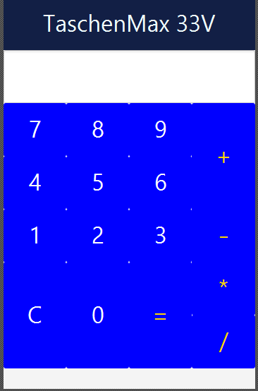Code zum Design vom Taschenrechner
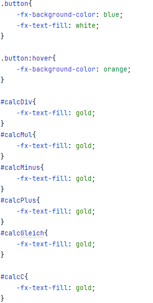Dieser Taschenrechner kann grundlegende mathematische Berechnungen durchführen. Genauer gesagt: Ermöglicht er mühelos Addition, Subtraktion, Multiplikation und Division.
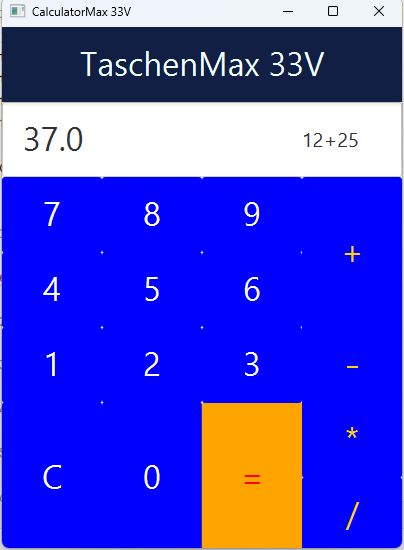Das Schere Stein Papier Spiel
Du kennst sicher das bekannte Schere-Stein-Papier-Spiel aus dem echten Leben. Nun ist es jetzt hier in Digitaler Form
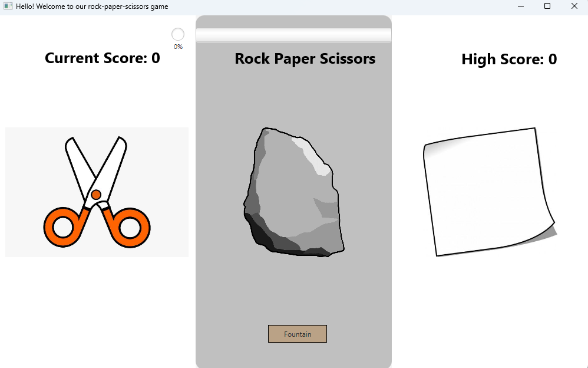Hier sieht man nun wie eine Runde gespielt wurde. Also der Spieler hat hier Schere gewählt und der Gegner (Bei uns eine die KI) Stein. Und in der Mitte oben kann man dann sehen was dabei rausgekommen ist, nämlich, dass der Spieler in dieser Runde verloren hat
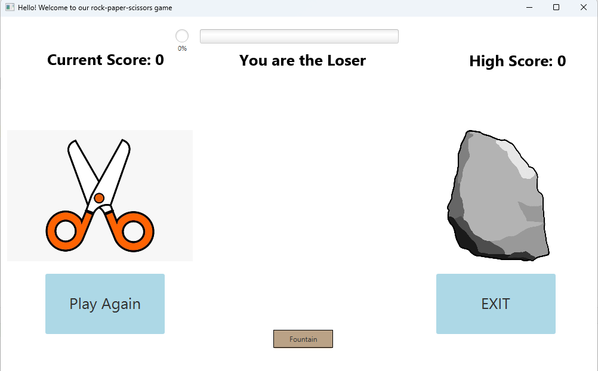Hier ist noch eine Runde, aber dieses Mal hat der Spieler "Brunnen" gewählt und die KI Papier, wie man sehen kann hat der Spieler auch hier gegen die KI verloren
Minesweeper
Das Spiel Minesweeper
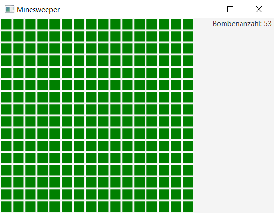Minesweeper Gameplay
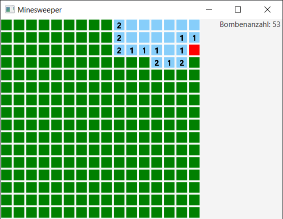Minesweeper Gameover
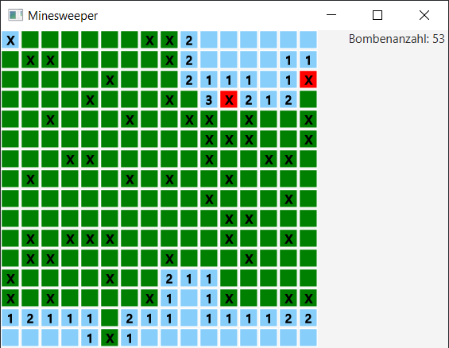Unser 1. Eigenes Spiel
Name: Racing Game
Start Menü von unserem Spiel
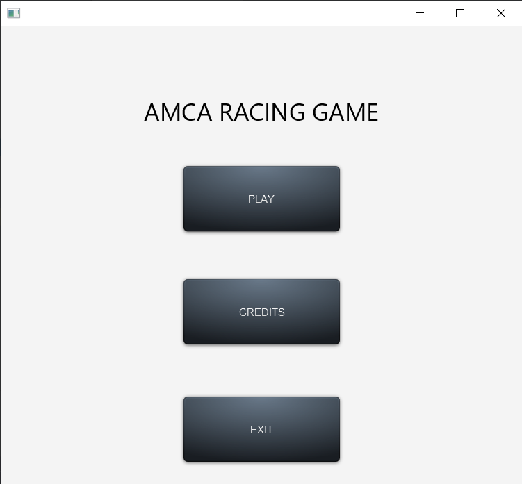Auto deiner Wahl auswählen
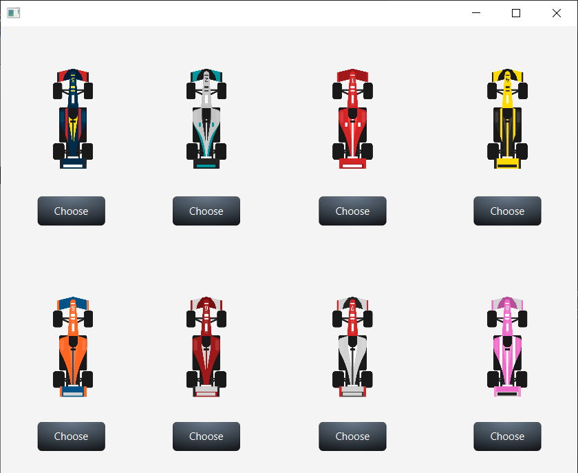Lade-Screen
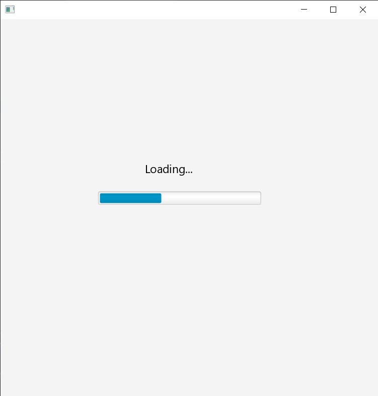Das Spiel beginnt
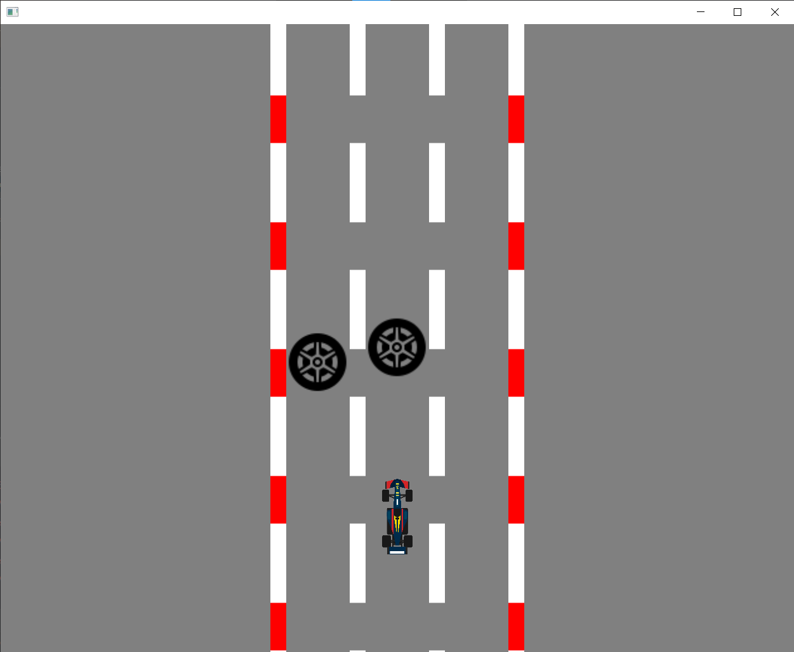Hier drinnen habn wir unsere Spiel-Oberfläche erstellt
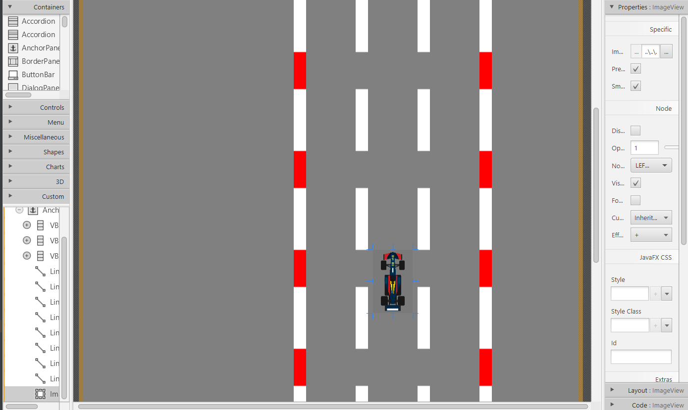Das Spiel Snake
Das Startmenü von unserem Snake-Game
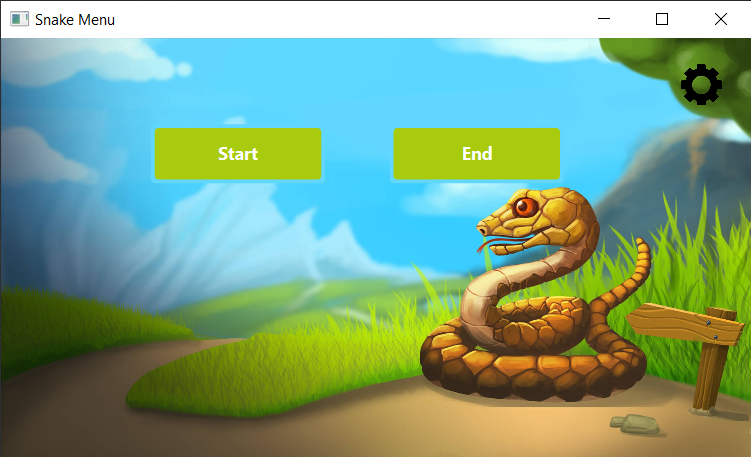Die Einstellungen für die Musik im Spiel
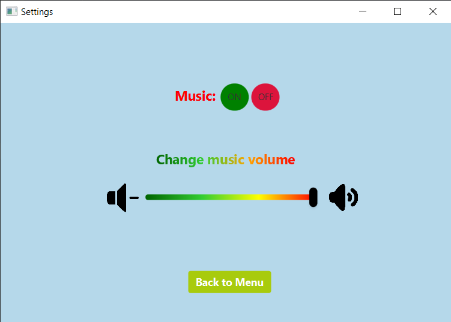Das Spiel geht los

Das ist unsere "Bauumgebung"
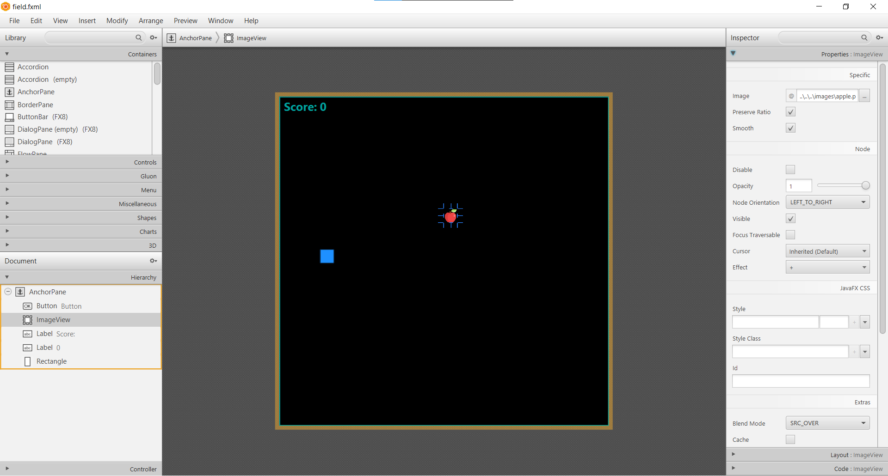Game Over
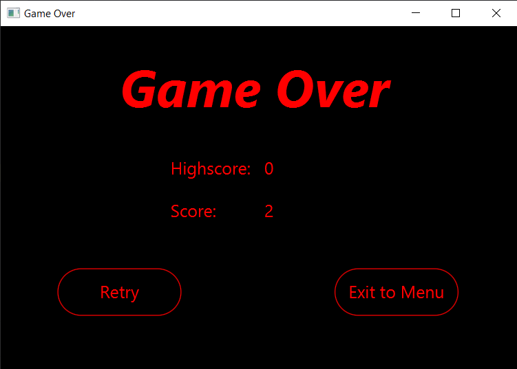